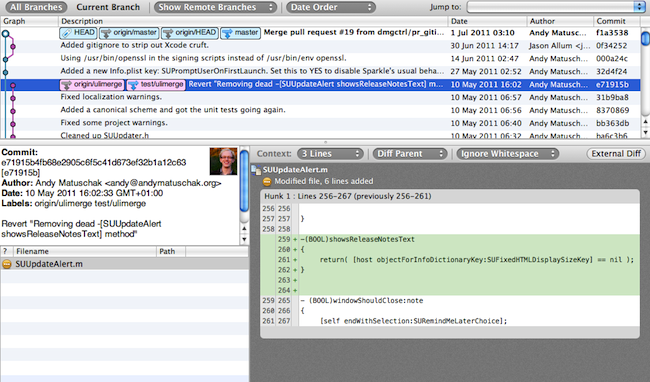
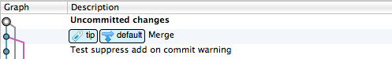
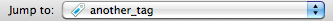

Repository Window: Log view

The history view shows you the graph of changes in the repository, and allows you to examine each change to see what happened. The top section is a traditional graph view which shows the progression of commits, branches and merges. Selecting an item in this table populates the other views, showing you (anti-clockwise from left) the details of the commit, the files that were changed in this commit, and the specific differences that were committed.
Branches and tags are shown on the view in boxes with icons which correspond to their type.
Uncommitted changes

As well as showing you the history, this view also shows uncommitted changes in your working copy as a grey blob, with a grey ancestry line connecting it to the timeline. While the File Status View is the primary way to view uncommitted changes in your working copy, the advantage of showing them here too is that if you're doing a merge, you can visualise the effect it is going to have on the graph before you commit.
Jump around

If you want to skip quickly to the tip of a branch or to a tag, you can use this convenient drop-down box at the top-right of the history graph to do that without any scrolling. You can of course also use the sidebar.
History retrieval
You might notice that there is no interface for controlling how much of the history you see - all you need to do if you want to see more is to scroll down, or as you use the jump button. SourceTree is actually loading the history entries on demand in the background as you scroll, so there's . It does mean that if you select a branch / tag from the jump button which is quite far down the history, there will be a slight delay while the intervening history is retrieved. But on the whole, it should feel seamless.
See also
The Toolbar
The Sidebar and Footer
The File Status View
The Search View
Drafting a commit message
Repository Settings
Submodules and Subrepositories